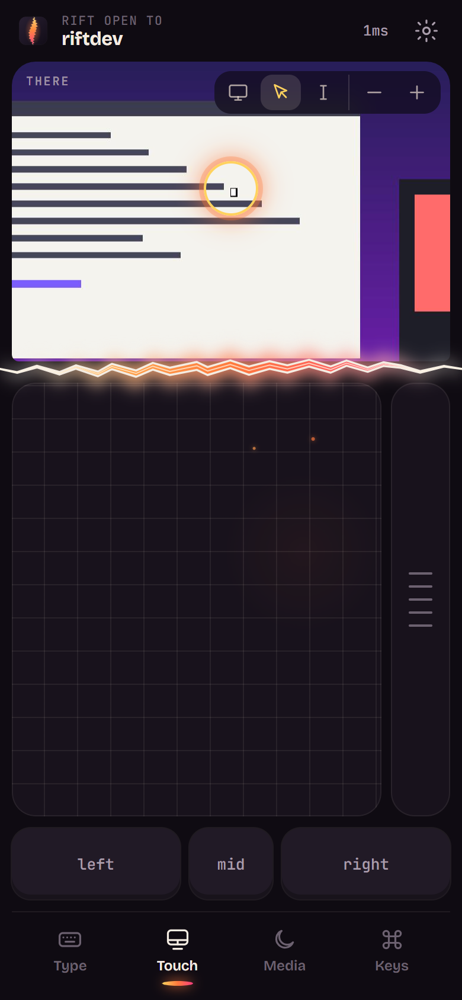
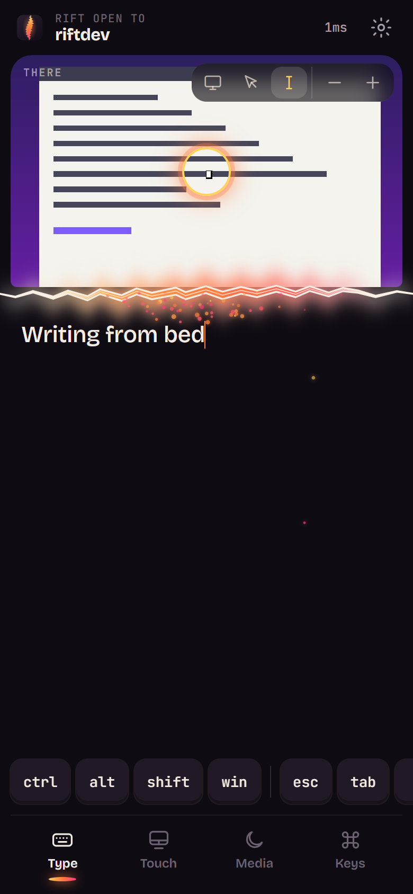
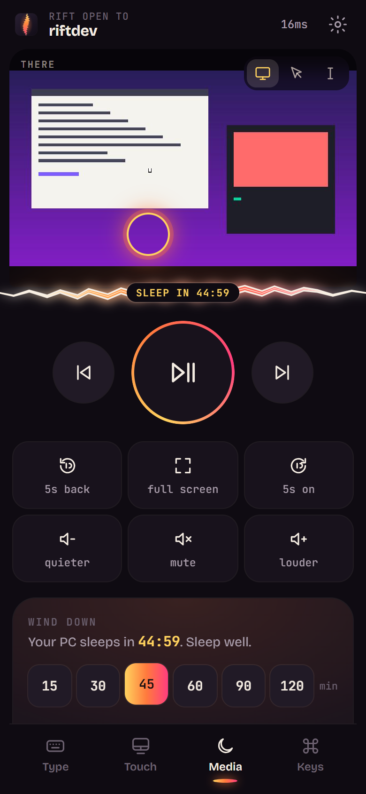
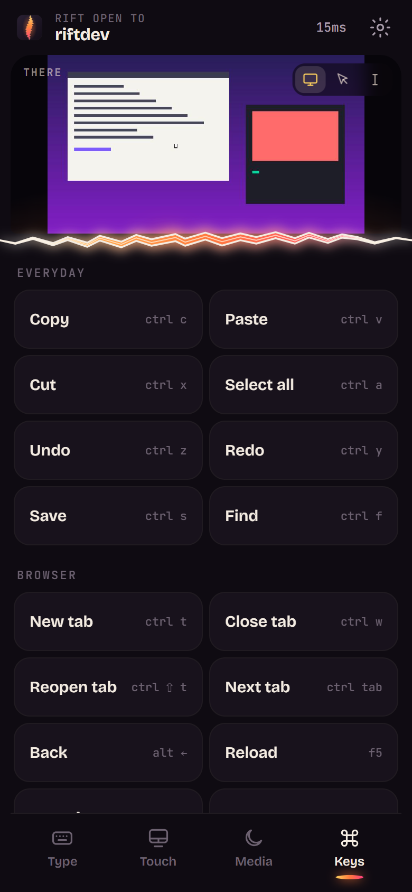
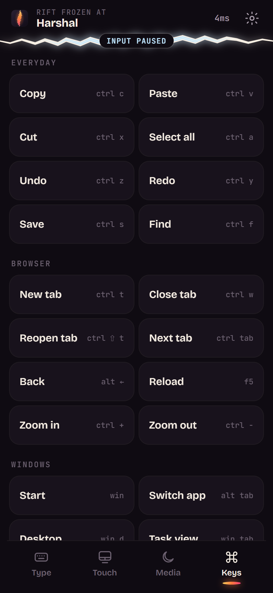

01
See there.
Above the seam is a live window into your computer. It follows your text while you type and your pointer while you move. Too far from the screen to read it? Look down. Tap the picture to click right there.

rift /rɪft/ noun — a crack that splits something apart; an opening between two places.
RIFT tears a private seam between your phone and your computer. Type, point, see your screen up close, and wind it down for the night, all from the couch or the bed.
free · open source · no phone app · no account · nothing leaves your home


your desk, your chair, your screen
your bed, your couch, your hand
Sitting at a desk all day is exhausting. But the moment you lie down, your computer is there and you're here. RIFT tears an opening between the two. Your phone reaches through it to type, click, scroll and see, so you don't have to get up.
the interface is the rift
Above the seam is a live window into your computer. It follows your text while you type and your pointer while you move. Too far from the screen to read it? Look down. Tap the picture to click right there.

Below it are your hands. Your own phone keyboard, with autocorrect, swipe and voice. A trackpad that feels like a laptop's. Every shortcut you need, each one labelled with its real keys, so it teaches you as you go.

The seam's glow is the connection. Steady means open. Flicker means the Wi‑Fi is struggling. Ice means you froze input from your computer. Every tap sends a spark through, so you can see it arrive. Drag the seam to make the window bigger, or tap it to fold the window away and save battery.

Big, sleepy-thumb controls for whatever's playing. A sleep timer for when you drift off mid-episode; the countdown lives on the seam. Screen off, lock, or sleep, without getting out of bed.
No. RIFT runs in your phone's browser; scanning the code is the whole setup. Add it to your home screen and it opens full-screen and reconnects by itself.
Windows 10 and 11, and macOS 12.3 or later (the live view needs macOS 14). Any modern iPhone or Android phone on the same Wi‑Fi.
No. Only a phone that scanned your computer's code holds the key, and everything is encrypted end to end. Seal every rift at any time to make a new code.
It only runs while it's on screen and unfolded. Tap the seam to fold it away; switch to the data saver quality if you like.
Nothing. RIFT is free and open source.